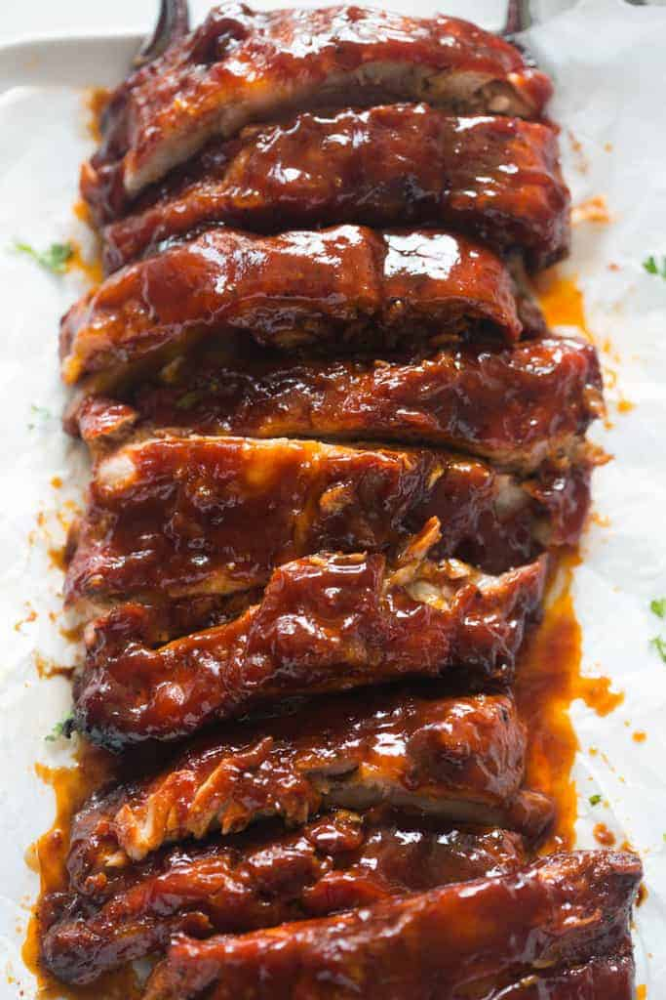

Slow-Cooker Barbecue Ribs

Suculent ribs in rich barbecue sauce
Simple and easy way to make ribs you'll love in the convenience of your kitchen, without a barbecue
Ingredients
Servers 8
- 4 pounds pork baby back ribs
- salt and pepper to taste
- 2 cups ketchup
- 1 cup chilli sauce
- 1/2 cup packed brown sugar
- 4 tablespoons vinegar
- 2 teaspoons dreid oregano
- 2 teaspoons Worcestershire sauce
- 1 dash hot sauce
Directions
- Prehead overn to 400 degrees F (200 degres C)
- Season ribs with salt and pepper. Place in a shallow baking pan. Brown in over 15 minutes.
Turn over, and brown another 15 minutes; drain fat.
- In a medium bowl, mix together the ketchup, chili sauce, brown sauger, vinegar, oregano, Worcestershire sauce, hot sauce, an salt and
pepper. Place ribs in slow cooker. Pour sauce over ribs, and turn to coat.
- Cover, and cook on Low 6 to 8 hours, or until ribs are tender.